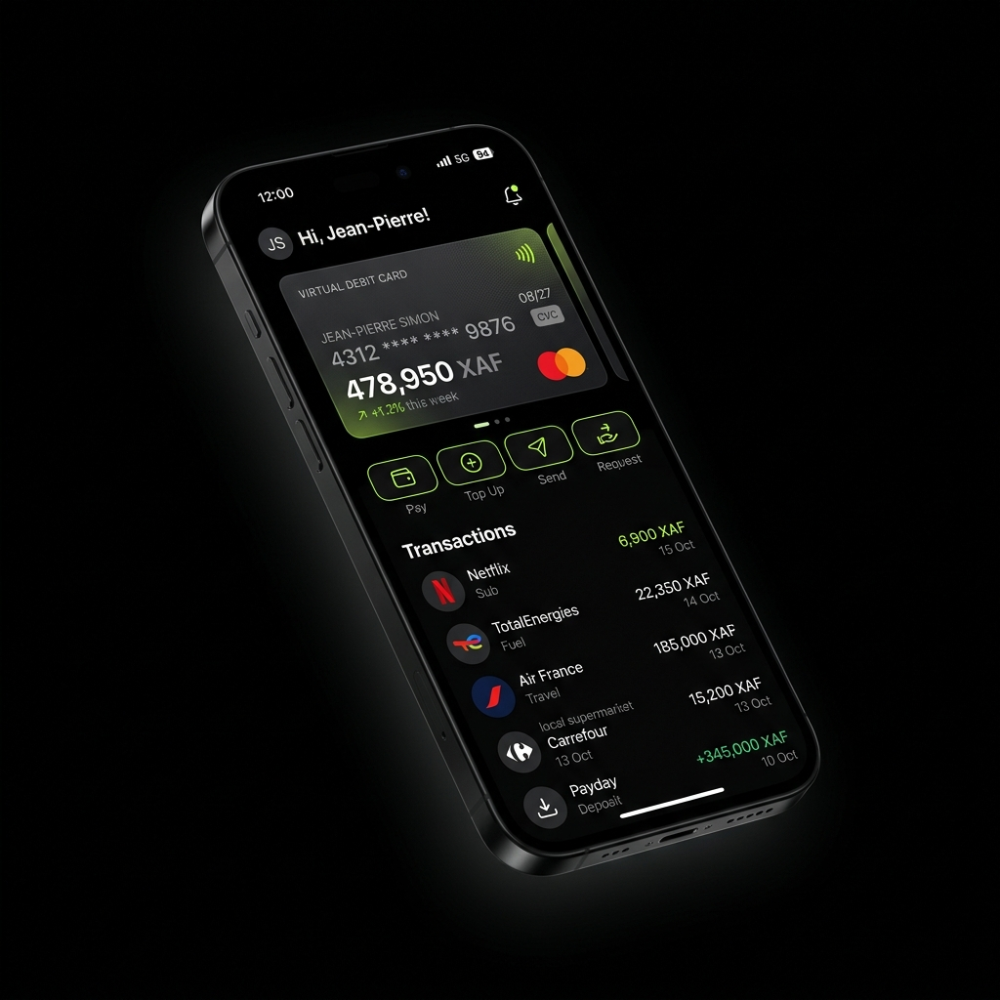
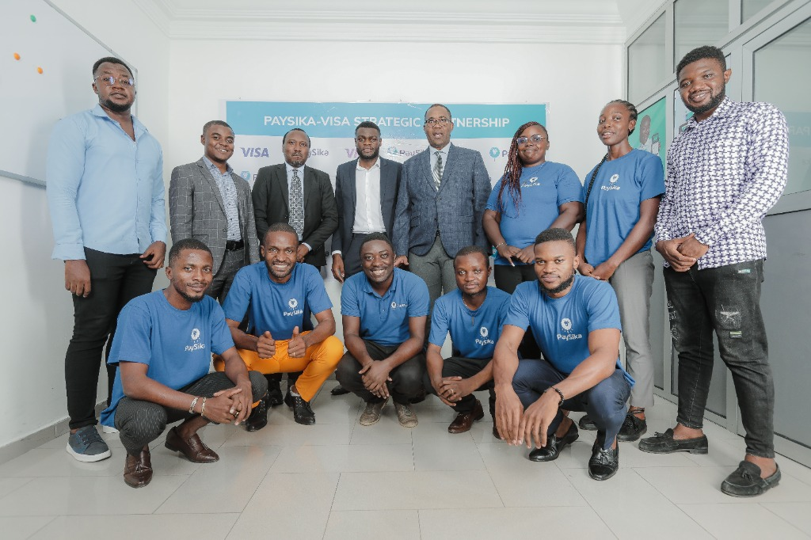

PaySika
Building a premier mobile finance experience in Africa from the ground up.
Over four years as the Founding Designer, I shaped the entire product experience—designing the core mobile app (Onboarding, KYC, cards), the back-office, the website, and the physical card itself. I established and maintained the brand guidelines and design system.
Team Leadership
Recruited, scaled, and managed the creative team, establishing streamlined asset handoff pipelines for developers.
Process Engineering
Engineered highly efficient cross-functional Design-to-Mobile and Design-to-Marketing workflows to speed up iteration times.
Data-Driven
Leveraged Mixpanel analytics to identify onboarding bottlenecks and usability bugs, driving updates that boosted user retention.
Physical Product
Led the end-to-end design of PaySika's physical debit card experience, packaging, and unboxing, driving user referrals.

PaySika-Visa Strategic Partnership
Celebrating a historic corporate milestone. Under Ndouken's design leadership, PaySika scaled to thousands of active users, paving the way for strategic integrations with key financial partners like Visa.
Legacy: Scaled the digital product to serve thousands of active users, establishing robust design systems and high-converting onboarding funnels.